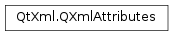

QXmlAttributes¶
Synopsis¶
Functions¶
- def
append(qName, uri, localPart, value) - def
clear() - def
count() - def
index(qName) - def
index(uri, localPart) - def
length() - def
localName(index) - def
qName(index) - def
swap(other) - def
type(index) - def
type(qName) - def
type(uri, localName) - def
uri(index) - def
value(index) - def
value(qName) - def
value(uri, localName)
Detailed Description¶
The
PySide2.QtXml.QXmlAttributesclass provides XML attributes.If attributes are reported by
QXmlContentHandler.startElement()this class is used to pass the attribute values.Use
PySide2.QtXml.QXmlAttributes.index()to locate the position of an attribute in the list,PySide2.QtXml.QXmlAttributes.count()to retrieve the number of attributes, andPySide2.QtXml.QXmlAttributes.clear()to remove the attributes. New attributes can be added withPySide2.QtXml.QXmlAttributes.append(). UsePySide2.QtXml.QXmlAttributes.type()to get an attribute’s type andPySide2.QtXml.QXmlAttributes.value()to get its value. The attribute’s name is available fromPySide2.QtXml.QXmlAttributes.localName()orPySide2.QtXml.QXmlAttributes.qName(), and its namespace URI fromPySide2.QtXml.QXmlAttributes.uri().
-
class
PySide2.QtXml.QXmlAttributes¶ -
class
PySide2.QtXml.QXmlAttributes(arg__1) Parameters: arg__1 – PySide2.QtXml.QXmlAttributesConstructs an empty attribute list.
-
PySide2.QtXml.QXmlAttributes.append(qName, uri, localPart, value)¶ Parameters: - qName – unicode
- uri – unicode
- localPart – unicode
- value – unicode
Appends a new attribute entry to the list of attributes. The qualified name of the attribute is
qName, the namespace URI isuriand the local name islocalPart. The value of the attribute isvalue.
-
PySide2.QtXml.QXmlAttributes.clear()¶ Clears the list of attributes.
-
PySide2.QtXml.QXmlAttributes.count()¶ Return type: PySide2.QtCore.intReturns the number of attributes in the list. This function is equivalent to
PySide2.QtXml.QXmlAttributes.length().
-
PySide2.QtXml.QXmlAttributes.index(qName)¶ Parameters: qName – unicode Return type: PySide2.QtCore.intLooks up the index of an attribute by the qualified name
qName.Returns the index of the attribute or -1 if it wasn’t found.
See also
-
PySide2.QtXml.QXmlAttributes.index(uri, localPart) Parameters: - uri – unicode
- localPart – unicode
Return type: PySide2.QtCore.intThis is an overloaded function.
Looks up the index of an attribute by a namespace name.
urispecifies the namespace URI, or an empty string if the name has no namespace URI.localPartspecifies the attribute’s local name.Returns the index of the attribute, or -1 if it wasn’t found.
See also
-
PySide2.QtXml.QXmlAttributes.length()¶ Return type: PySide2.QtCore.intReturns the number of attributes in the list.
See also
-
PySide2.QtXml.QXmlAttributes.localName(index)¶ Parameters: index – PySide2.QtCore.intReturn type: unicode Looks up an attribute’s local name for the attribute at position
index. If no namespace processing is done, the local name is an empty string.See also
-
PySide2.QtXml.QXmlAttributes.qName(index)¶ Parameters: index – PySide2.QtCore.intReturn type: unicode Looks up an attribute’s XML 1.0 qualified name for the attribute at position
index.See also
-
PySide2.QtXml.QXmlAttributes.swap(other)¶ Parameters: other – PySide2.QtXml.QXmlAttributesSwaps
thiswithother.
-
PySide2.QtXml.QXmlAttributes.type(uri, localName)¶ Parameters: - uri – unicode
- localName – unicode
Return type: unicode
This is an overloaded function.
Looks up an attribute’s type by namespace name.
urispecifies the namespace URI andlocalNamespecifies the local name. If the name has no namespace URI, use an empty string foruri.Currently only “CDATA” is returned.
-
PySide2.QtXml.QXmlAttributes.type(index) Parameters: index – PySide2.QtCore.intReturn type: unicode Looks up an attribute’s type for the attribute at position
index.Currently only “CDATA” is returned.
-
PySide2.QtXml.QXmlAttributes.type(qName) Parameters: qName – unicode Return type: unicode This is an overloaded function.
Looks up an attribute’s type for the qualified name
qName.Currently only “CDATA” is returned.
-
PySide2.QtXml.QXmlAttributes.uri(index)¶ Parameters: index – PySide2.QtCore.intReturn type: unicode Looks up an attribute’s namespace URI for the attribute at position
index. If no namespace processing is done or if the attribute has no namespace, the namespace URI is an empty string.See also
-
PySide2.QtXml.QXmlAttributes.value(uri, localName)¶ Parameters: - uri – unicode
- localName – unicode
Return type: unicode
This is an overloaded function.
Returns an attribute’s value by namespace name.
urispecifies the namespace URI, or an empty string if the name has no namespace URI.localNamespecifies the attribute’s local name.
-
PySide2.QtXml.QXmlAttributes.value(qName) Parameters: qName – unicode Return type: unicode This is an overloaded function.
Returns an attribute’s value for the qualified name
qName, or an empty string if no attribute exists for the name given.See also
-
PySide2.QtXml.QXmlAttributes.value(index) Parameters: index – PySide2.QtCore.intReturn type: unicode Returns an attribute’s value for the attribute at position
index. The index must be a valid position (i.e., 0 <=index<PySide2.QtXml.QXmlAttributes.count()).
© 2018 The Qt Company Ltd. Documentation contributions included herein are the copyrights of their respective owners. The documentation provided herein is licensed under the terms of the GNU Free Documentation License version 1.3 as published by the Free Software Foundation. Qt and respective logos are trademarks of The Qt Company Ltd. in Finland and/or other countries worldwide. All other trademarks are property of their respective owners.